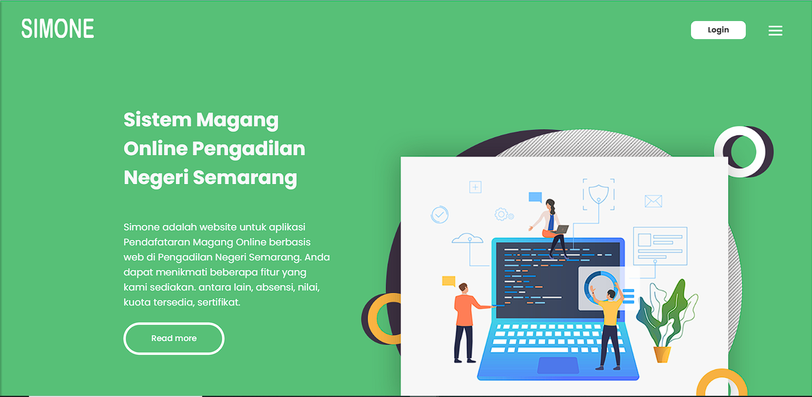

Independent developer · Semarang, Indonesia
AlifFadhil
Thoughtful design. Practical code.
Full Stack Developer
I design and develop thoughtful web products. Clear interfaces, practical systems, and a little attention to the details that matter.
Let’s collaborate/Selected Work
5 projects

Matsuri Castle
Real Project
Pasar Iwak
Real Project
SIMONE
Real Project
SICULI
Real ProjectBelum ada karya pada kategori ini.
/Service
From a clear first impression to the systems behind it.
Responsive websites and practical web applications, connecting considered interfaces with reliable backend logic.
- Responsive interfaces
- Backend & API integration
- Operational systems
Clear visual hierarchies and interaction flows that make complex tasks feel simple, from the first impression to the next action.
- Interface design
- Interaction flows
- Visual hierarchy
Flexible digital solutions that work consistently across modern web environments, with careful attention to usability on every screen.
- Adaptive layouts
- Cross-browser experiences
- Web-based products
/Experience
3+ years of experience
An Informatics Engineering graduate from Dian Nuswantoro University, bringing together clean interfaces, application logic, and structured data.
Web-based registration and internal operational systems.
Related projectUniversitas Dian NuswantoroInformatics Engineering2019 — 2023
Working with
Available for New Project
Have a project in mind?
Let’s turn your next idea into a clear digital experience. Tell me what you’re working on, and we can take it from there.
Contact Me
Questions before we start?
What types of projects do you work on?
I focus on web-based products: portfolio sites, landing pages, dashboards, operational systems, and marketplace-style platforms.
Can you work with an existing design?
Yes. I can implement an existing design system or help refine the interface direction before development begins.
Do you build both frontend and backend?
Yes. My work can cover responsive interfaces, backend logic, databases, and API integration depending on the project’s needs.
How do we start a project?
Start with a short conversation about your goal, users, expected features, and timeline. From there we can define the best next step.
Are you available for collaboration?
Yes, for selected freelance and collaborative opportunities. Use the contact CTA to get in touch.